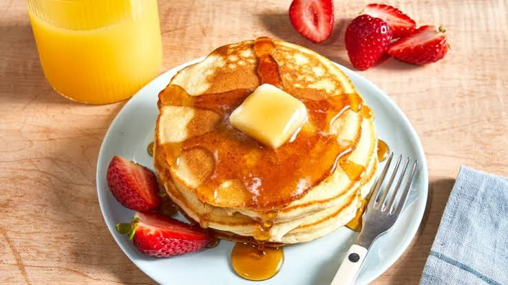

Pancakes
Pancakes are soft, fluffy, and golden breakfast treats made with flour, milk, eggs, and butter.

Ingredients
-
200 g all-purpose flour
-
2 tablespoons sugar
-
1 teaspoon baking powder
-
½ teaspoon salt
-
250 ml milk
-
1 egg
-
2 tablespoons melted butter
-
1 teaspoon vanilla extract
Instructions
- Combine the flour, sugar, baking powder, and salt in a bowl.
- Add the milk, egg, melted butter, and vanilla extract. Mix until just combined.
- Heat a lightly buttered pan over medium heat.
- Pour some batter into the pan. Cook until bubbles form, then flip and cook until golden brown.
- Serve warm with your favorite toppings, such as syrup, fruit, or honey.